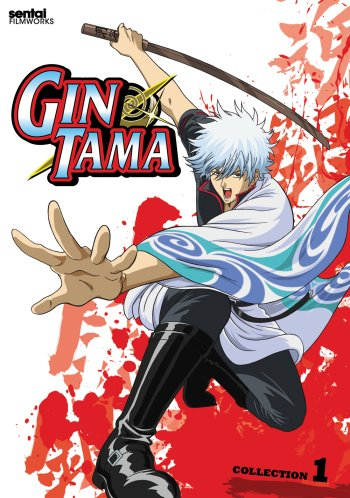
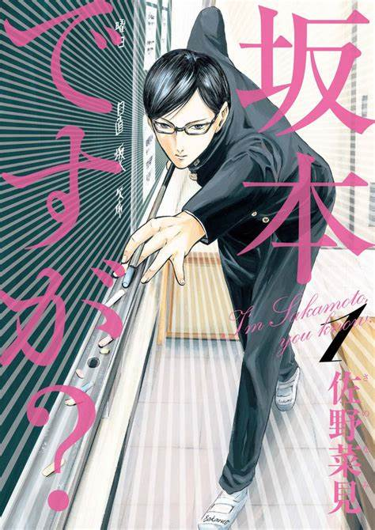
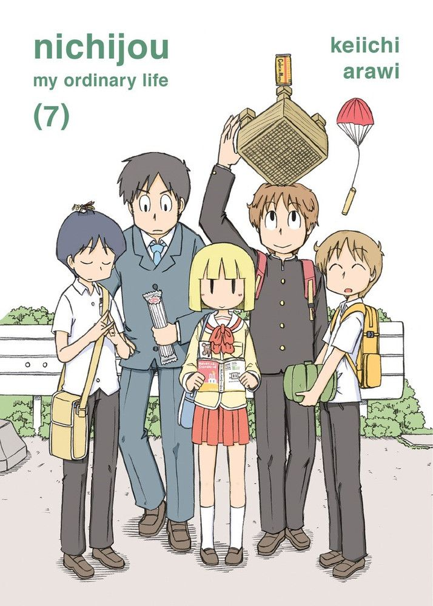
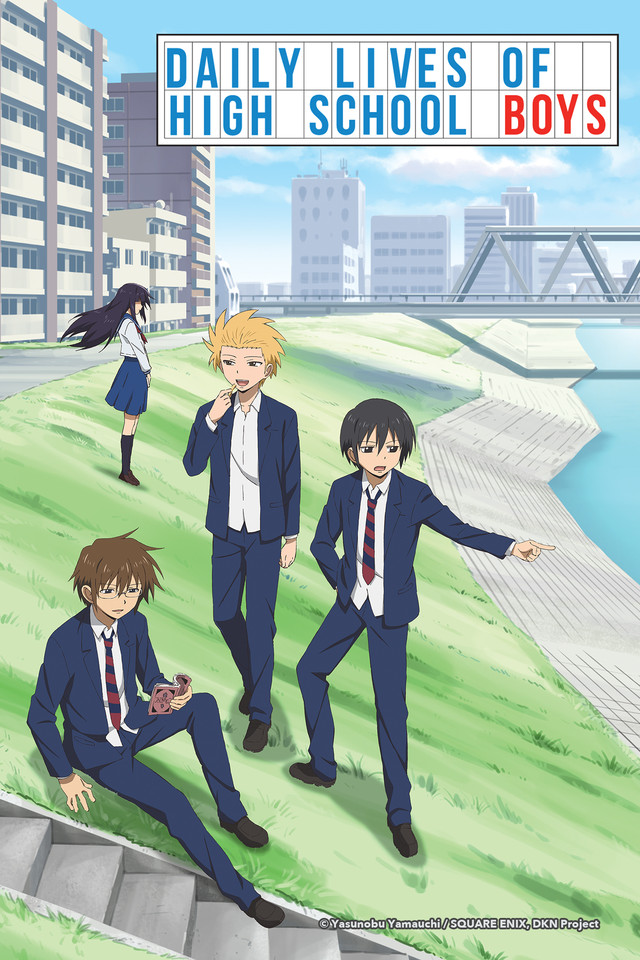
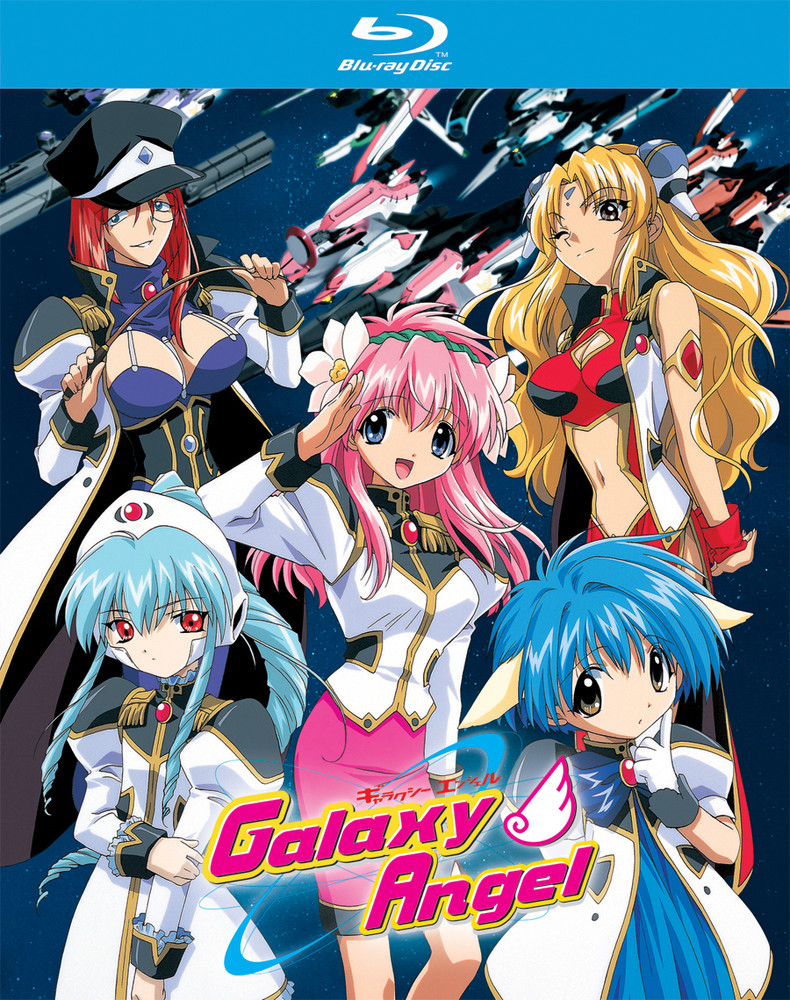
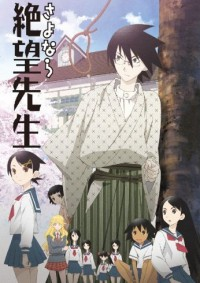
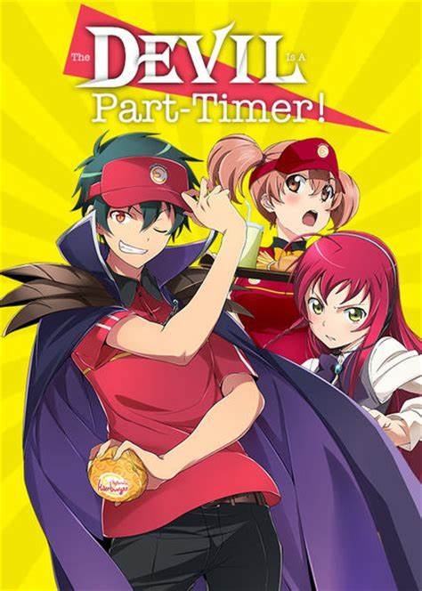
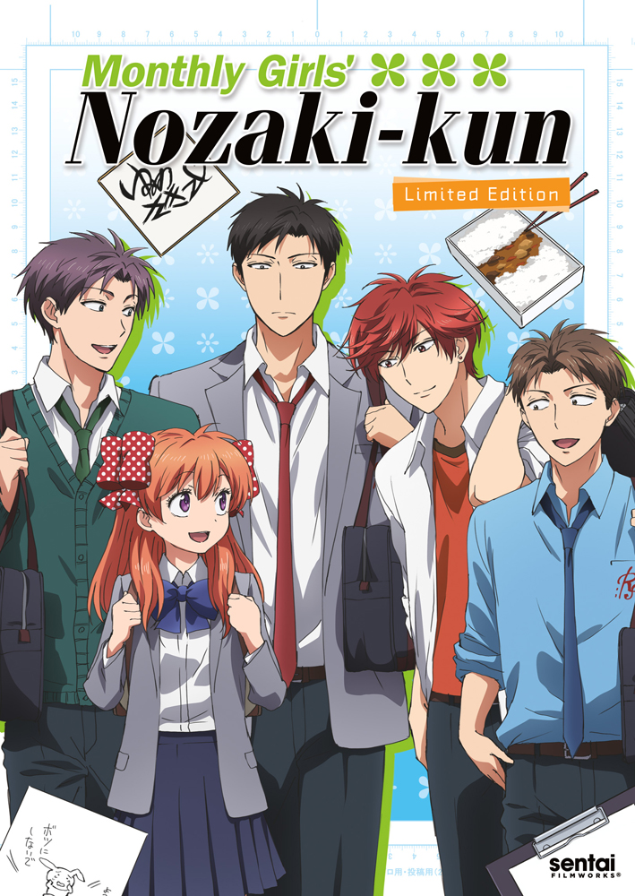
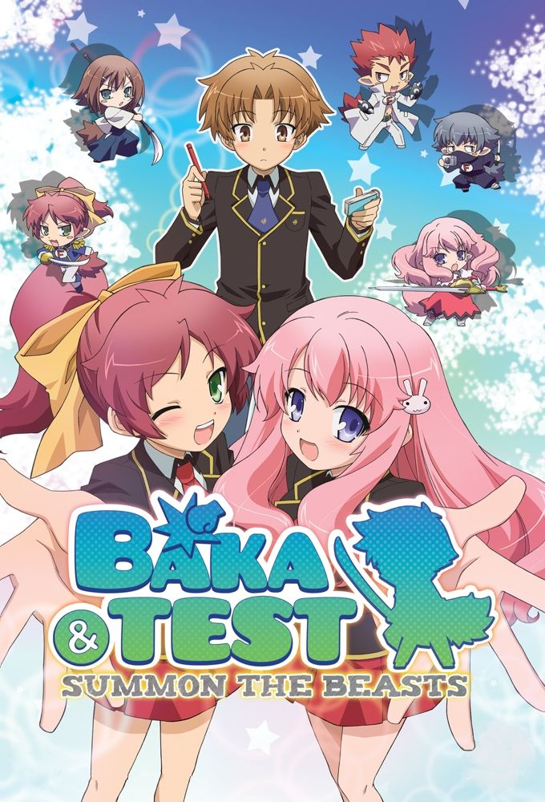
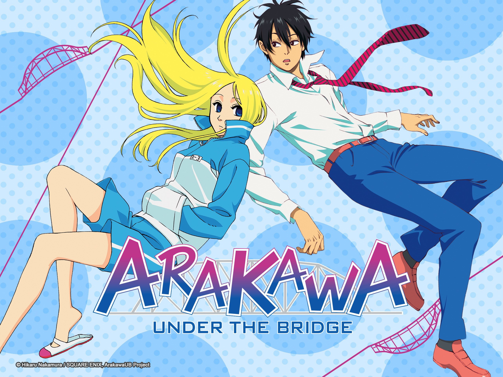

Top 1:Gintama |
Meet oddballs Gintoki Sakata, Shinpachi Shimura, Kagura, and their pet dog Sadaharu! It’s feudal Japan and swords have been banned! Wait, what?! Not if Gintoki doesn’t have anything to say! |
Top 2:Sakamoto desu ga? (Haven’t You Heard? I’m Sakamoto) |
From the first day of school, a new student has taken the spotlight all to himself. Everything he does is cool, cooler, and coolest! He’s so stylish in everything—studying, cleaning, eating, doing jobs, the list goes on—that he’s totally the coolest! Who is he? Well, Haven’t You Heard? I’m Sakamoto! |
Top 3:Nichijou (My Ordinary Life) |
Walking through ordinary life has never been so amusing! From treading the path of normalcy to dashing towards the ludicrous, the six main characters, as well as some others, shall live everyday with high spirits and positivity! |
Top 4:Daily Lives of High School Boys |
High School? That’s like one of the drollest parts of life! And high school boys? Now it all sounds a hundred times more crazy and whack! Putting it simply, Daily Lives of High School Boys is about the fun and foolish moments of high school—especially high school life for boys! Silly scenarios coming ahead! |
Top 5:Galaxy Angel |
Springing on to the top five, the Angel Brigade of Galaxy Angel brings in the giggles and snickers while hopping on all sorts of intergalactic, planetary, and space adventures! As if space adventures aren’t imaginative enough, this show has wackiness and hilarity at every turn! |
Top 6:Sayonara, Zetsubou-Sensei |
Pessimism and depression? Doesn’t sound like a great combination, but Sayonara, Zetsubou-Sensei bags it! Suicidal as it may sound, this show actually kills—with laughter that is! With its arsenal of smart jokes and cast of characters with various extreme issues, this show blatantly screams that it's depressingly good! |
Top 7:Hataraku Maou-sama! (The Devil Is a Part-Timer!) |
What could be more funny than a demon lord (the baddest villain of all) working part-time in a fast-food joint? Talk about tables turning, waves whirling back, and destiny going totally upside down! What’s worse—the demon lord is from another world, and Earth is a new place to him! With an out-of-this-world scenario such as this, moments of laughter are drizzled with awkwardness and randomness! |
Top 8:Gekkan Shoujo Nozaki-kun |
Whenever a love confession goes astray, more often than not—a comical mishap follows! And just so you know, Gekkan Shoujo Nozaki-kun (a.k.a. Monthly Girls’ Nozaki-kun!) is all about that! A love confession gone wrong, a dense oddball of a guy, a gullible girl in love, and several wacky personalities—this is what a life out of a shoujo anime/manga is like! Or is it actually not?! |
Top 9:Baka to Test to Shoukanjuu |
Akihisa Yoshii is the biggest idiot of the school! He’s low in practically every subject and has no motivation at all, which explains why he is at the lowest class of Fumizuki Academy—Class F! But when an extraordinarily beautiful, kind, and genius girl named Mizuki Himeji unluckily gets enlisted into Class F, Yoshii and the other students of Class F find unparalleled motivation. |
Top 10:Arakawa Under the Bridge |
Humorous circumstances have led Kou Ichinomiya to fall off the Arakawa Bridge! Then a strange woman named Nino saves his life! Oh no, now he’s in debt for the first time ever! Nino only wants one thing in return though, to fall in love! And so it begins—Kou’s uncanny but comedic life under the Arakawa Bridge! |